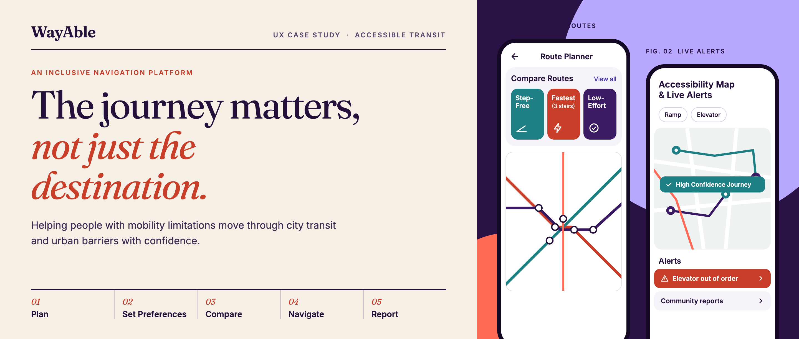
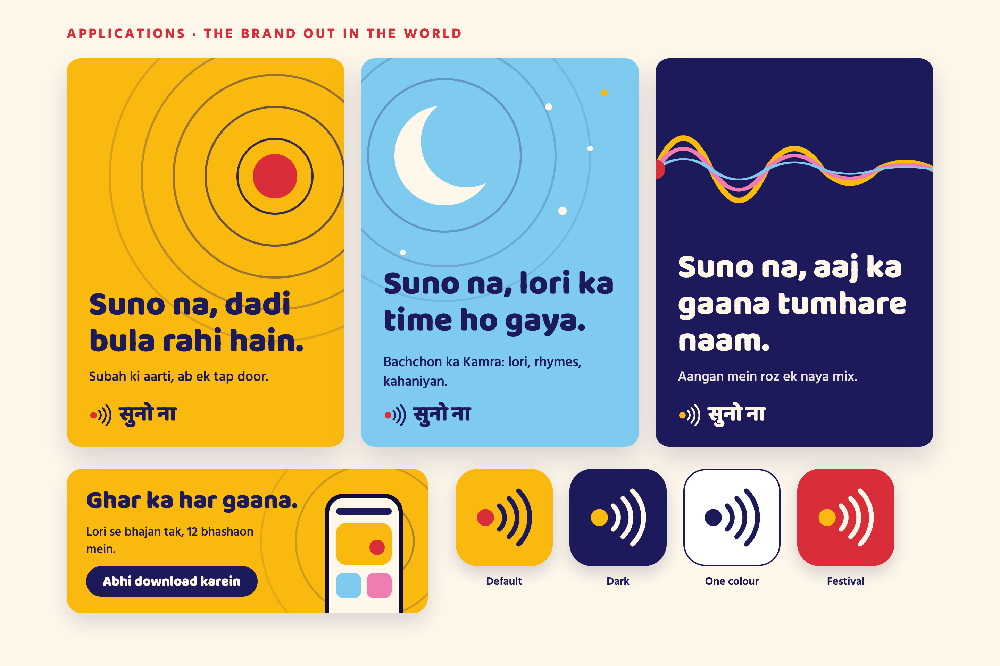
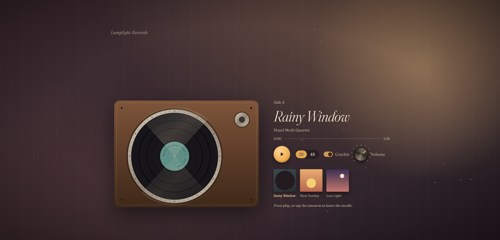
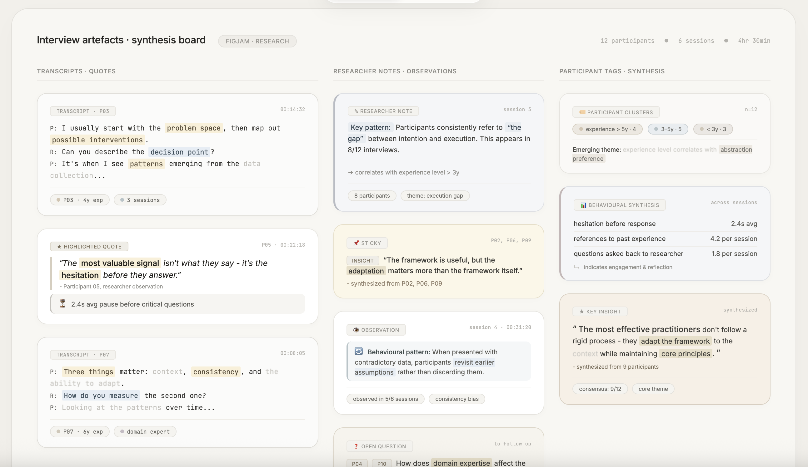
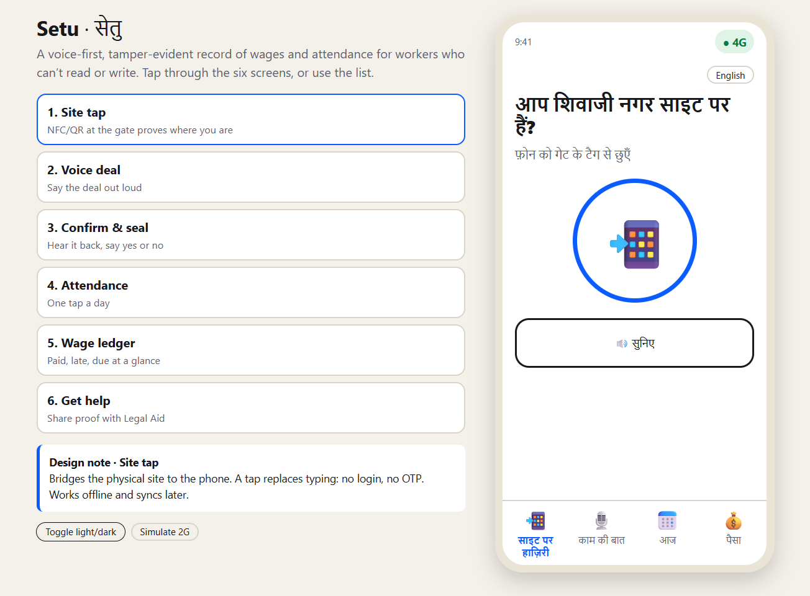
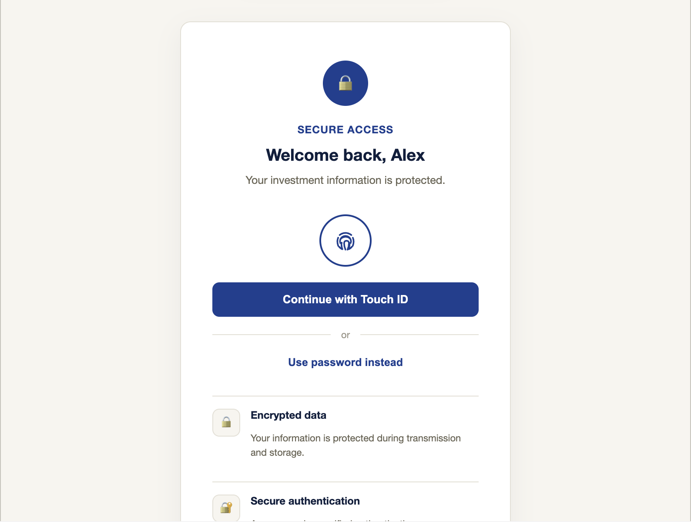

50+
components
Co-owned with tokens, reusable patterns, and developer handoff.
I dig into messy finance and AI workflows, talk to real users, and turn complex systems into products people actually trust. Currently designing at Russell Investments — from scalable design systems to shipping 0-to-1 AI tools.
Co-owned with tokens, reusable patterns, and developer handoff.
Across a 200+ page global ecosystem in 13 countries.
Supported with conversational AI and guided navigation.
Structured into a searchable, comparison-ready experience.
Fintech products, global design systems, and trust-first AI tools — from early user research to shipped interfaces.
Turned everyday UPI, IMPS, and NEFT payments into split reward points across travel, shopping, and vaults.
Read case study →
Replaced fragmented UI variants with shared tokens, component rules, and built-in accessibility across 13–14 global markets.
Read case study →Unified performance monitoring, root-cause investigation, and corrective action tracking in one desktop workspace — from research to 0-to-1 architecture.
Read case study →Inclusive navigation for Mumbai's transit that optimizes for accessibility and journey confidence — unifying mobility profiles, route trade-offs, and time-decayed barrier alerts.
Read case study →
White-label, audio-first financial intelligence turning fragmented market news into personalized briefings — built across both a consumer listening app and a B2B partner console.
Read case study →
Cut documentation fatigue without risking clinical trust. Built a traceable workflow where AI drafts notes and clinicians stay in control.
Read case study →I approach design as a connected discipline — bringing systems thinking, strategic problem-solving, and inclusive innovation together to create experiences that are purposeful, scalable, and intuitive.
I think beyond individual screens, designing connected experiences, scalable patterns, and reusable systems that maintain consistency while evolving with product needs.
I ground design decisions in user insights, business goals, and product context — identifying the right problems to solve and prioritising opportunities with meaningful impact.
I build inclusive experiences by default, exploring emerging technologies and new interaction models to reduce friction, challenge conventions, and make products more useful.
Independent explorations across product, interaction, and emerging technologies — turning ideas into tangible experiences, experimenting with new approaches, and learning through making.

Inclusive music, stories, and familiar sounds for kids, adults, and seniors — with brand identity, voice, and app UI.

A pleasant and soothing vinyl experience that takes you back in time.

Mixed-methods study uncovering how transparency, evidence, and control shape trust in AI.

Voice-first, icon-led wage and contract proof for informal migrant workers — built for low-end phones, patchy signal, and IVR fallback.

Secure institutional platform uniting portfolio analytics, fund depth, and human-led AI insights.
Worked across enterprise CMSs, fintech apps, and AI workflows — and if a tool isn't listed here, I pick it up fast.
4+ years designing enterprise financial systems, consumer web experiences, and research-backed digital products. Full history on LinkedIn ↗
Senior UX Designer (Feb 2026 – Present) · UX Designer (Apr 2024 – Jan 2026)
UI & UX Designer
Associate UX Designer